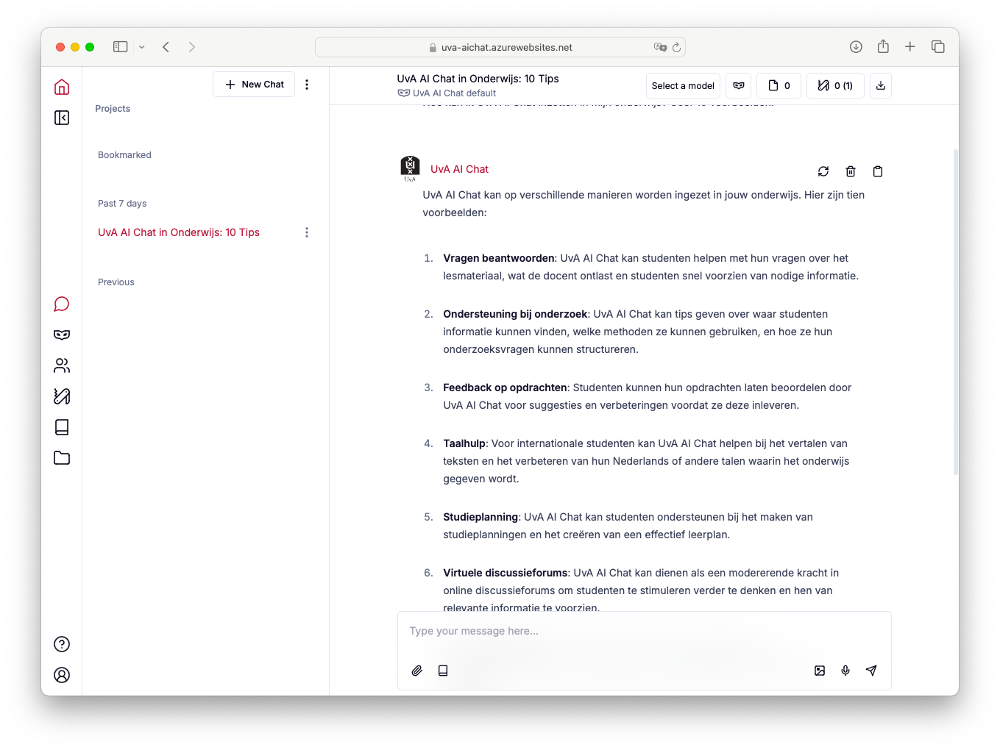

Introducing UvA AI chat for teachers
Directors, FMG-TLC
Jessica Taylor Piotrowski
Sharon Klinkenberg
2025-07-17
Introduction
UvA AI Chatbot
Demo
AIchat.uva.nl 
- Chatbot User Interfase
- Multiple models
- Hosted on UvA servers
- GDPR/AVG compliant
- Zero data retention
- Available to staff with UvAnetID
Large Language Models in a nutshell
LLM are pre trained models that predict the next word based on input.
- Where Do They Learn From?
- Books. Wikipedia, Websites, Online articles (Stuff people publicly wrote online — before a certain date.)
- What Does “Training” Mean?
- The model reads billions of sentences to learn how people write and speak — spotting patterns, not unrstanding like a human.
- What Can They Do?
- Answer questions; Write emails, stories, and summaries; Translate languages; Help with coding
- But Be Aware:
- They might make things up; they don’t “know” facts — they guess based on patterns, they are not search engines, but can search the web.
Implementation strategy
Strategy for implementation
You don’t have to use it!
- September-October: Explore, don’t rely on it for education
- October-January: If you want to use in Semester 2, start preparing with our team
- February: Use in education
Experimenting
Practical Use Cases
- Teacher’s Sparring Partner
- Translation of Texts from EN to NL and vice versa
- Lesson Plan Inspiration
- In the Classroom
- Activating the Classroom Prompts & Question/Answer for Engagement [based on articles]
- Help students use it as a study tool and also as a writing tool
I used it too much, I could have learned more. (Anonymous Student)
Assessment
- Item Creation
- Answer Model Generation
- Elaborative Feedback (with Love)
- Rubric Inspiration
BUT - Elephant In The Room - Fraud
- Check Your Essay Prompt
- Add parameters that are hard for AI to do [use resources from class; cite 10 resources that are peer-reviewed journals]
- Find Different Ways of Supervising (can you somehow see the process?)
- Add Presentation
- Talk with your students
Can you explain your paper
Critical considerations
Regulations
- When can/can’t you use the tool
- Keep a close line with your teaching directors
- Examination board integration is key
Inform Students about your policy
Values
- Restraints in the Bot can be surprising
- Ongoing community dialogue about our values in education and the needs of the labor market
- Sustainability considerations are key
Resources
UvA AI Chat staff
General information page for all UvA Staff
UvA AI policy document
TLC training and courses
- e-learning: Getting started with UvA AI Chat
- Manual: UvA AI Chat
- Website: Teaching & GenAI
- Workshop: GenAI in Assessment
- Workshop: Introduction to AI for teacher
- e-learning: Impact of GenAI on higher education (for lecturers)
- Track: BKO+ Track – Responsible AI in Education
e-learning for students: Responsible use of GenAI in higher education (for students)
Support
Consultation
Book a consultation with our TLC-FMG AI team.
Google: tlc-fmg AI consultation
Technical support
Contact your local ICTO team.
- PSY: icto-psy@uva.nl
- CW: icto-cw@uva.nl
- POW: icto-pow-fmg@uva.nl
- SW: icto-csw@uva.nl
Q&A
TLC-FMG
Feel free to contact us at: